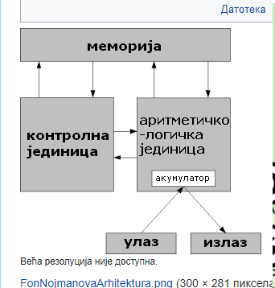
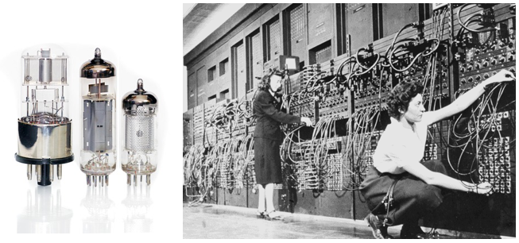
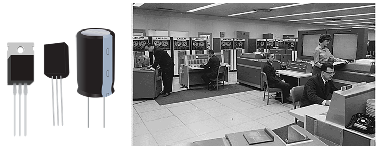
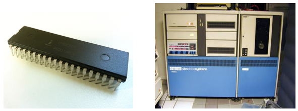
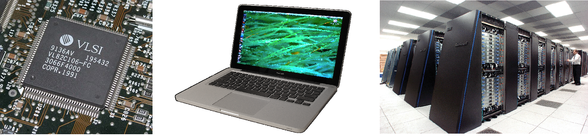
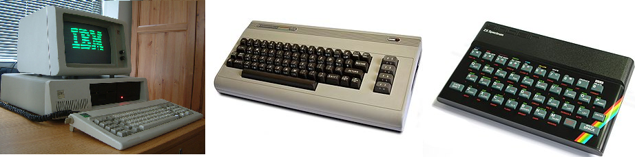

<!DOCTYPE html>
<html xmlns="http://www.w3.org/1999/xhtml" lang="sr-Cyrl"></html>
  <head>
    <meta charset="utf-8" />
    <meta name="viewport" content="width=device-width, initial-scale=1.0" />
    <title>Генерације електронских рачунара &#8212; 1_razred_IKT_DigitalnaPismenost</title>
    <link rel="stylesheet" href="../_static/pygments.css" type="text/css" />
    <link rel="stylesheet" href="../_static/basic.css" type="text/css" />
    <link rel="stylesheet" type="text/css" href="../_static/activecode.css" />
    <link rel="stylesheet" type="text/css" href="../_static/codemirror.css" />
    <link rel="stylesheet" type="text/css" href="../_static/clickable.css" />
    <link rel="stylesheet" type="text/css" href="../_static/pytutor.css" />
    <link rel="stylesheet" type="text/css" href="../_static/modal-basic.css" />
    <link rel="stylesheet" type="text/css" href="../_static/datafile.css" />
    <link rel="stylesheet" type="text/css" href="../_static/dragndrop.css" />
    <link rel="stylesheet" type="text/css" href="../_static/fitb.css" />
    <link rel="stylesheet" type="text/css" href="../_static/matrixeq.css" />
    <link rel="stylesheet" type="text/css" href="../_static/parsons.css" />
    <link rel="stylesheet" type="text/css" href="../_static/lib/prettify.css" />
    <link rel="stylesheet" type="text/css" href="../_static/poll.css" />
    <link rel="stylesheet" type="text/css" href="../_static/showEval.css" />
    <link rel="stylesheet" type="text/css" href="../_static/tabbedstuff.css" />
    <link rel="stylesheet" type="text/css" href="https://stackpath.bootstrapcdn.com/bootstrap/4.2.1/css/bootstrap.min.css" />
    <link rel="stylesheet" type="text/css" href="../_static/video.css" />
    <link rel="stylesheet" type="text/css" href="../_static/webgldemo.css" />
    <link rel="stylesheet" type="text/css" href="../_static/webglinteractive.css" />
    <link rel="stylesheet" type="text/css" href="../_static/karel.css" />
    <link rel="stylesheet" type="text/css" href="../_static/notes.css" />
    <link rel="stylesheet" href="../_static/user-highlights.css" type="text/css" />
    <link rel="stylesheet" href="https://use.fontawesome.com/releases/v5.1.1/css/all.css" type="text/css" />
    <link rel="stylesheet" href="../_static/bootstrap-4.0.0-dist/css/bootstrap.min.css" type="text/css" />
    <link rel="stylesheet" href="../_static/flatly.min.css" type="text/css" />
    <link rel="stylesheet" href="../_static/petlja.css" type="text/css" />
    <script id="documentation_options" data-url_root="../" src="../_static/documentation_options.js"></script>
    <script type="text/javascript" src="../_static/runestonebase.js"></script>
    <script type="text/javascript" src="../_static/jquery.js"></script>
    <script type="text/javascript" src="../_static/underscore.js"></script>
    <script type="text/javascript" src="../_static/doctools.js"></script>
    <script type="text/javascript" src="../_static/language_data.js"></script>
    <script type="text/javascript" src="../_static/jquery.highlight.js"></script>
    <script type="text/javascript" src="../_static/bookfuncs.js"></script>
    <script type="text/javascript" src="../_static/codemirror.js"></script>
    <script type="text/javascript" src="../_static/xml.js"></script>
    <script type="text/javascript" src="../_static/css.js"></script>
    <script type="text/javascript" src="../_static/python.js"></script>
    <script type="text/javascript" src="../_static/htmlmixed.js"></script>
    <script type="text/javascript" src="../_static/javascript.js"></script>
    <script type="text/javascript" src="../_static/jquery_i18n/CLDRPluralRuleParser.js"></script>
    <script type="text/javascript" src="../_static/jquery_i18n/jquery.i18n.js"></script>
    <script type="text/javascript" src="../_static/jquery_i18n/jquery.i18n.messagestore.js"></script>
    <script type="text/javascript" src="../_static/jquery_i18n/jquery.i18n.fallbacks.js"></script>
    <script type="text/javascript" src="../_static/jquery_i18n/jquery.i18n.language.js"></script>
    <script type="text/javascript" src="../_static/jquery_i18n/jquery.i18n.parser.js"></script>
    <script type="text/javascript" src="../_static/jquery_i18n/jquery.i18n.emitter.js"></script>
    <script type="text/javascript" src="../_static/jquery_i18n/jquery.i18n.emitter.bidi.js"></script>
    <script type="text/javascript" src="../_static/activecode-i18n.en.js"></script>
    <script type="text/javascript" src="../_static/skulpt.min.js"></script>
    <script type="text/javascript" src="../_static/skulpt-stdlib.js"></script>
    <script type="text/javascript" src="../_static/activecode.js"></script>
    <script type="text/javascript" src="../_static/clike.js"></script>
    <script type="text/javascript" src="../_static/timed_activecode.js"></script>
    <script type="text/javascript" src="../_static/animationbase.js"></script>
    <script type="text/javascript" src="../_static/mchoice.js"></script>
    <script type="text/javascript" src="../_static/timedmc.js"></script>
    <script type="text/javascript" src="../_static/timed.js"></script>
    <script type="text/javascript" src="../_static/mchoice-i18n.en.js"></script>
    <script type="text/javascript" src="../_static/clickable.js"></script>
    <script type="text/javascript" src="../_static/timedclickable.js"></script>
    <script type="text/javascript" src="../_static/d3.v2.min.js"></script>
    <script type="text/javascript" src="../_static/jquery.ba-bbq.min.js"></script>
    <script type="text/javascript" src="../_static/jquery.jsPlumb-1.3.10-all-min.js"></script>
    <script type="text/javascript" src="../_static/pytutor.js"></script>
    <script type="text/javascript" src="../_static/codelens.js"></script>
    <script type="text/javascript" src="../_static/datafile.js"></script>
    <script type="text/javascript" src="../_static/dragndrop.js"></script>
    <script type="text/javascript" src="../_static/timeddnd.js"></script>
    <script type="text/javascript" src="../_static/dragndrop-i18n.en.js"></script>
    <script type="text/javascript" src="../_static/fitb.js"></script>
    <script type="text/javascript" src="../_static/timedfitb.js"></script>
    <script type="text/javascript" src="../_static/fitb-i18n.en.js"></script>
    <script type="text/javascript" src="../_static/matrixeq.js"></script>
    <script type="text/javascript" src="../_static/lib/prettify.js"></script>
    <script type="text/javascript" src="../_static/lib/hammer.min.js"></script>
    <script type="text/javascript" src="../_static/parsons.js"></script>
    <script type="text/javascript" src="../_static/parsons-i18n.en.js"></script>
    <script type="text/javascript" src="../_static/timedparsons.js"></script>
    <script type="text/javascript" src="../_static/poll.js"></script>
    <script type="text/javascript" src="../_static/reveal.js"></script>
    <script type="text/javascript" src="../_static/shortanswer.js"></script>
    <script type="text/javascript" src="../_static/timed_shortanswer.js"></script>
    <script type="text/javascript" src="../_static/showEval.js"></script>
    <script type="text/javascript" src="../_static/tabbedstuff.js"></script>
    <script type="text/javascript" src="../_static/runestonevideo.js"></script>
    <script type="text/javascript" src="../_static/webglinteractive.js"></script>
    <script type="text/javascript" src="../_static/FileSaver.min.js"></script>
    <script type="text/javascript" src="../_static/Blob.js"></script>
    <script type="text/javascript" src="../_static/karelCorner.js"></script>
    <script type="text/javascript" src="../_static/karelRobot.js"></script>
    <script type="text/javascript" src="../_static/karelWorld.js"></script>
    <script type="text/javascript" src="../_static/karelRobotDrawer.js"></script>
    <script type="text/javascript" src="../_static/karelUI.js"></script>
    <script type="text/javascript" src="../_static/karel.js"></script>
    <script type="text/javascript" src="../_static/karel-i18n.en.js"></script>
    <script type="text/javascript" src="../_static/notes.js"></script>
    <script type="text/javascript" src="../_static/pygamelib-init.js"></script>
    <script type="text/javascript" src="../_static/blockly/blockly_compressed.js"></script>
    <script type="text/javascript" src="../_static/blockly/blocks_compressed.js"></script>
    <script type="text/javascript" src="../_static/blockly/python_compressed.js"></script>
    <script type="text/javascript" src="../_static/blockly/msg-sr.js"></script>
    <script type="text/javascript" src="../_static/blockpy/utilities.js"></script>
    <script type="text/javascript" src="../_static/blockpy/python_errors.js"></script>
    <script type="text/javascript" src="../_static/blockpy/ast_node_visitor.js"></script>
    <script type="text/javascript" src="../_static/blockpy/abstract_interpreter.js"></script>
    <script type="text/javascript" src="../_static/blockpy/pytifa.js"></script>
    <script type="text/javascript" src="../_static/blockpy/abstract_interpreter_definitions.js"></script>
    <script type="text/javascript" src="../_static/blockpy/python_to_blockly.js"></script>
    <script type="text/javascript" src="../_static/blockpy/imported.js"></script>
    <script type="text/javascript" src="../_static/blockpy/blocks/class.js"></script>
    <script type="text/javascript" src="../_static/blockpy/blocks/comment.js"></script>
    <script type="text/javascript" src="../_static/blockpy/blocks/comprehensions.js"></script>
    <script type="text/javascript" src="../_static/blockpy/blocks/dict.js"></script>
    <script type="text/javascript" src="../_static/blockpy/blocks/if.js"></script>
    <script type="text/javascript" src="../_static/blockpy/blocks/io.js"></script>
    <script type="text/javascript" src="../_static/blockpy/blocks/lists.js"></script>
    <script type="text/javascript" src="../_static/blockpy/blocks/sets.js"></script>
    <script type="text/javascript" src="../_static/blockpy/blocks/loops.js"></script>
    <script type="text/javascript" src="../_static/blockpy/blocks/parking.js"></script>
    <script type="text/javascript" src="../_static/blockpy/blocks/tuple.js"></script>
    <script type="text/javascript" src="../_static/blockpy/blocks/turtles.js"></script>
    <script type="text/javascript" src="../_static/blockpy/blocks/text.js"></script>
    <script type="text/javascript" src="../_static/blockpy-modal.js"></script>
    <script type="text/javascript" src="../_static/translations.js"></script>
    <script async="async" type="text/javascript" src="https://cdnjs.cloudflare.com/ajax/libs/mathjax/2.7.5/latest.js?config=TeX-AMS-MML_HTMLorMML"></script>
    <script type="text/javascript" src="../_static/mchoice-i18n.sr-Cyrl.js"></script>
    <script type="text/javascript" src="../_static/mchoice-i18n.sr.js"></script>
    <script type="text/javascript" src="../_static/mchoice-i18n.sr-Latn.js"></script>
    <script type="text/javascript" src="../_static/dragndrop-i18n.sr-Cyrl.js"></script>
    <script type="text/javascript" src="../_static/dragndrop-i18n.sr.js"></script>
    <script type="text/javascript" src="../_static/dragndrop-i18n.sr-Latn.js"></script>
    <script type="text/javascript" src="../_static/fitb-i18n.sr-Cyrl.js"></script>
    <script type="text/javascript" src="../_static/fitb-i18n.sr.js"></script>
    <script type="text/javascript" src="../_static/fitb-i18n.sr-Latn.js"></script>
    <script type="text/javascript" src="../_static/parsons-i18n.sr-Cyrl.js"></script>
    <script type="text/javascript" src="../_static/parsons-i18n.sr.js"></script>
    <script type="text/javascript" src="../_static/parsons-i18n.sr-Latn.js"></script>
    <script type="text/javascript" src="../_static/activecode-i18n.sr-Cyrl.js"></script>
    <script type="text/javascript" src="../_static/activecode-i18n.sr.js"></script>
    <script type="text/javascript" src="../_static/activecode-i18n.sr-Latn.js"></script>
    <script type="text/javascript" src="../_static/jquery-ui-1.10.3.custom.min.js"></script>
    <script type="text/javascript" src="../_static/jquery-fix.js"></script>
    <script type="text/javascript" src="../_static/bootstrap-4.0.0-dist/js/bootstrap.min.js"></script>
    <script type="text/javascript" src="../_static/bootstrap-4.0.0-dist/js/bootstrap.bundle.min.js"></script>
    <script type="text/javascript" src="../_static/bootstrap-sphinx.js"></script>
    <script type="text/javascript" src="../_static/waypoints.min.js"></script>
    <script type="text/javascript" src="../_static/rangy-core.js"></script>
    <script type="text/javascript" src="../_static/rangy-textrange.js"></script>
    <script type="text/javascript" src="../_static/rangy-cssclassapplier.js"></script>
    <script type="text/javascript" src="../_static/user-highlights.js"></script>
    <script type="text/javascript" src="../_static/jquery.idle-timer.js"></script>
    <script type="text/javascript" src="../_static/processing-1.4.1.min.js"></script>
    <script type="text/javascript" src="../_static/jquery.hotkey.js"></script>
    <script type="text/javascript" src="../_static/jquery-migrate-1.2.1.min.js"></script>
    <script type="text/javascript" src="../_static/course-errors.js"></script>
    <script type="text/javascript" src="../_static/petlja.js"></script>
    <link rel="index" title="Index" href="../genindex.html" />
    <link rel="search" title="Search" href="../search.html" />
    <link rel="next" title="Квиз 1.5" href="zkviz_5.html" />
    <link rel="prev" title="Историјски развој информационо-комуникационих технологија" href="istorijski_razvoj_lekcija_5.html" />
<meta charset='utf-8'>
<meta http-equiv='X-UA-Compatible' content='IE=edge,chrome=1'>
<meta content='width=device-width, initial-scale=1.0, maximum-scale=1.0, user-scalable=0' name='viewport' />
<link rel="shortcut icon" href="../_static/favicon.ico" type="image/ico" />
<script type="text/javascript">
  eBookConfig = {};
  eBookConfig.host = 'http://127.0.0.1:8000' ? 'http://127.0.0.1:8000' : 'http://127.0.0.1:8000';
  eBookConfig.app = eBookConfig.host + '/runestone';
  eBookConfig.ajaxURL = eBookConfig.app + '/ajax/';
  eBookConfig.course = '1_razred_IKT_DigitalnaPismenost';
  eBookConfig.logLevel = '0';
  eBookConfig.loginRequired = 'false';
  eBookConfig.build_info = "";
  eBookConfig.isLoggedIn = false;
  eBookConfig.useRunestoneServices = 'false';
  eBookConfig.python3 = 'true';
  eBookConfig.basecourse = 'Primer_kurs';
  eBookConfig.runestone_version = '';
  eBookConfig.imagesDir = '../_images/';
  eBookConfig.staticDir = '../_static/';
  if (typeof (Sk) != "undefined")
    Sk.imgPath = eBookConfig.imagesDir;
</script>

<div id="fb-root"></div>


  </head><body>


<!-- Begin navbar -->

<nav id="navbar" class="navbar navbar-default navbar-fixed-top" role="navigation">

  <a href="https://petlja.org"> </a>
  <a href="https://petlja.org/net.kabinet"> </a>
  <div class="container">

    <div class="navbar-header">
      <button type="button" class="navbar-toggle collapsed" data-toggle="collapse"
        data-target="#bs-example-navbar-collapse-1">
        <span class="sr-only">Toggle navigation</span>
        <span class="icon-bar"></span>
        <span class="icon-bar"></span>
        <span class="icon-bar"></span>
      </button>
    </div>

    <div class="collapse navbar-collapse" id="bs-example-navbar-collapse-1"
      style="margin-left: 25px; text-align: center;">
      <ul class="nav navbar-nav">
        <li class="active"><a
            href="../">1_razred_IKT_DigitalnaPismenost</a>
        </li>
      </ul>
    </div>
  </div>
</nav>

<div style="margin-top: 65px;font-size: 20px; width: 20%; float: left; height: calc(100vh - 115px);">
  
      <div class="sphinxsidebar" role="navigation" aria-label="main navigation">
        <div class="sphinxsidebarwrapper"><ul>
    
    <div class="lecture-div" id=lecture-аУвод>
        <i class="fas fa-caret-right caret-position"></i>
        <i class="fas fa-caret-down caret-position d-none"></i>
        <h5>Увод</h5>
    </div>

    <div class="d-none">
        
        
        <a href=../аУвод/uvodni_tekst.html>
        
        <div class="activity-div" id=activity-uvodni_tekst>
            
            <i class="fas fa-file-alt activity-icon"></i>
            
            Увод у курс
        </div>
    </a>
    

    </diV>
    
    <div class="lecture-div" id=lecture-Тема1>
        <i class="fas fa-caret-right caret-position"></i>
        <i class="fas fa-caret-down caret-position d-none"></i>
        <h5>1. Информационо - комуникационе технологије у савременом друштву</h5>
    </div>

    <div class="d-none">
        
        
        <a href=../Тема1/tekst_tema_1.html>
        
        <div class="activity-div" id=activity-tekst_tema_1>
            
            <i class="fas fa-file-alt activity-icon"></i>
            
            Садржај теме 1
        </div>
    </a>
    

    </diV>
    
    <div class="lecture-div" id=lecture-Лекција1>
        <i class="fas fa-caret-right caret-position"></i>
        <i class="fas fa-caret-down caret-position d-none"></i>
        <h5>1.1 Информационо-комуникационе технологије</h5>
    </div>

    <div class="d-none">
        
        
        <a href=../Лекција1/uvod_lekcija_1.html>
        
        <div class="activity-div" id=activity-uvod_lekcija_1>
            
            <i class="fas fa-file-alt activity-icon"></i>
            
            Садржај лекције 1.1
        </div>
    </a>
    
        
        <a href=../Лекција1/IKT_lekcija_1.html>
        
        <div class="activity-div" id=activity-IKT_lekcija_1>
            
            <i class="fas fa-file-alt activity-icon"></i>
            
            1.1 ИКТ у савременом друштву
        </div>
    </a>
    
        
        <a href=../Лекција1/zkviz_1.html>
        
        <div class="activity-div" id=activity-zkviz_1>
            
            <i class="far fa-question-circle activity-icon"></i>
            
            Квиз 1.1
        </div>
    </a>
    

    </diV>
    
    <div class="lecture-div" id=lecture-Лекција2>
        <i class="fas fa-caret-right caret-position"></i>
        <i class="fas fa-caret-down caret-position d-none"></i>
        <h5>1.2 Рачунарске мреже и интернет</h5>
    </div>

    <div class="d-none">
        
        
        <a href=../Лекција2/uvod_lekcija_2.html>
        
        <div class="activity-div" id=activity-uvod_lekcija_2>
            
            <i class="fas fa-file-alt activity-icon"></i>
            
            Садржај лекције 1.2
        </div>
    </a>
    
        
        <a href=../Лекција2/mreze_lekcija_2.html>
        
        <div class="activity-div" id=activity-mreze_lekcija_2>
            
            <i class="fas fa-file-alt activity-icon"></i>
            
            Рачунарске мреже и интернет
        </div>
    </a>
    
        
        <a href=../Лекција2/zkviz_2.html>
        
        <div class="activity-div" id=activity-zkviz_2>
            
            <i class="far fa-question-circle activity-icon"></i>
            
            Квиз 1.2
        </div>
    </a>
    

    </diV>
    
    <div class="lecture-div" id=lecture-Лекција3>
        <i class="fas fa-caret-right caret-position"></i>
        <i class="fas fa-caret-down caret-position d-none"></i>
        <h5>1.3 Коришћење интернета</h5>
    </div>

    <div class="d-none">
        
        
        <a href=../Лекција3/uvod_lekcija_3.html>
        
        <div class="activity-div" id=activity-uvod_lekcija_3>
            
            <i class="fas fa-file-alt activity-icon"></i>
            
            Садржај лекције 1.3
        </div>
    </a>
    
        
        <a href=../Лекција3/internet_servisi_lekcija_3.html>
        
        <div class="activity-div" id=activity-internet_servisi_lekcija_3>
            
            <i class="fas fa-file-alt activity-icon"></i>
            
            Интернет сервиси
        </div>
    </a>
    
        
        <a href=../Лекција3/komunikacija_na_internetu_lekcija_3.html>
        
        <div class="activity-div" id=activity-komunikacija_na_internetu_lekcija_3>
            
            <i class="fas fa-file-alt activity-icon"></i>
            
            Начини и правила комуникације и лепог понашања на интернету
        </div>
    </a>
    
        
        <a href=../Лекција3/zkviz_3.html>
        
        <div class="activity-div" id=activity-zkviz_3>
            
            <i class="far fa-question-circle activity-icon"></i>
            
            Квиз 1.3
        </div>
    </a>
    

    </diV>
    
    <div class="lecture-div" id=lecture-Лекција4>
        <i class="fas fa-caret-right caret-position"></i>
        <i class="fas fa-caret-down caret-position d-none"></i>
        <h5>1.4 Ауторска права, веродостојност информација, заштита и безбедност</h5>
    </div>

    <div class="d-none">
        
        
        <a href=../Лекција4/uvod_lekcija_4.html>
        
        <div class="activity-div" id=activity-uvod_lekcija_4>
            
            <i class="fas fa-file-alt activity-icon"></i>
            
            Садржај лекције 1.4
        </div>
    </a>
    
        
        <a href=../Лекција4/prava_verodostojnost_lekcija_4.html>
        
        <div class="activity-div" id=activity-prava_verodostojnost_lekcija_4>
            
            <i class="fas fa-file-alt activity-icon"></i>
            
            Ауторска права и веродостојност информација
        </div>
    </a>
    
        
        <a href=../Лекција4/zastita_bezbednost_lekcija_4.html>
        
        <div class="activity-div" id=activity-zastita_bezbednost_lekcija_4>
            
            <i class="fas fa-file-alt activity-icon"></i>
            
            Заштита личних података и приватност
        </div>
    </a>
    
        
        <a href=../Лекција4/uticaji_lekcija_4.html>
        
        <div class="activity-div" id=activity-uticaji_lekcija_4>
            
            <i class="fas fa-file-alt activity-icon"></i>
            
            Утицаји ИКТ на здравље и околину
        </div>
    </a>
    
        
        <a href=../Лекција4/sve_boje_lekcija_4.html>
        
        <div class="activity-div" id=activity-sve_boje_lekcija_4>
            
            <i class="fas fa-file-alt activity-icon"></i>
            
            Све боје интернета
        </div>
    </a>
    
        
        <a href=../Лекција4/zkviz_4.html>
        
        <div class="activity-div" id=activity-zkviz_4>
            
            <i class="far fa-question-circle activity-icon"></i>
            
            Квиз 1.4
        </div>
    </a>
    

    </diV>
    
    <div class="lecture-div" id=lecture-Лекција5>
        <i class="fas fa-caret-right caret-position"></i>
        <i class="fas fa-caret-down caret-position d-none"></i>
        <h5>1.5 Развој ИКТ</h5>
    </div>

    <div class="d-none">
        
        
        <a href=../Лекција5/uvod_lekcija_5.html>
        
        <div class="activity-div" id=activity-uvod_lekcija_5>
            
            <i class="fas fa-file-alt activity-icon"></i>
            
            Садржај лекције 1.5
        </div>
    </a>
    
        
        <a href=../Лекција5/istorijski_razvoj_lekcija_5.html>
        
        <div class="activity-div" id=activity-istorijski_razvoj_lekcija_5>
            
            <i class="fas fa-file-alt activity-icon"></i>
            
            Историјски развој ИКТ
        </div>
    </a>
    
        
        <a href=../Лекција5/generacije_elektronskih_lekcija_5.html>
        
        <div class="activity-div" id=activity-generacije_elektronskih_lekcija_5>
            
            <i class="fas fa-file-alt activity-icon"></i>
            
            Генерације електронских рачунара
        </div>
    </a>
    
        
        <a href=../Лекција5/zkviz_5.html>
        
        <div class="activity-div" id=activity-zkviz_5>
            
            <i class="far fa-question-circle activity-icon"></i>
            
            Квиз 1.5
        </div>
    </a>
    

    </diV>
    
    <div class="lecture-div" id=lecture-Тема2>
        <i class="fas fa-caret-right caret-position"></i>
        <i class="fas fa-caret-down caret-position d-none"></i>
        <h5>2. Рачунарство</h5>
    </div>

    <div class="d-none">
        
        
        <a href=../Тема2/tekst_tema_2.html>
        
        <div class="activity-div" id=activity-tekst_tema_2>
            
            <i class="fas fa-file-alt activity-icon"></i>
            
            Садржај теме 2
        </div>
    </a>
    

    </diV>
    
    <div class="lecture-div" id=lecture-Лекција6>
        <i class="fas fa-caret-right caret-position"></i>
        <i class="fas fa-caret-down caret-position d-none"></i>
        <h5>2.1 Принципи рада рачунара</h5>
    </div>

    <div class="d-none">
        
        
        <a href=../Лекција6/uvod_lekcija_6.html>
        
        <div class="activity-div" id=activity-uvod_lekcija_6>
            
            <i class="fas fa-file-alt activity-icon"></i>
            
            Садржај лекције 2.1
        </div>
    </a>
    
        
        <a href=../Лекција6/kako_rade_računari_lekcija_6.html>
        
        <div class="activity-div" id=activity-kako_rade_računari_lekcija_6>
            
            <i class="fas fa-file-alt activity-icon"></i>
            
            Како раде рачунари
        </div>
    </a>
    
        
        <a href=../Лекција6/predstavljanje_podataka_lekcija_6.html>
        
        <div class="activity-div" id=activity-predstavljanje_podataka_lekcija_6>
            
            <i class="fas fa-file-alt activity-icon"></i>
            
            Представљање података у рачунару
        </div>
    </a>
    
        
        <a href=../Лекција6/zkviz_6.html>
        
        <div class="activity-div" id=activity-zkviz_6>
            
            <i class="far fa-question-circle activity-icon"></i>
            
            Квиз 2.1
        </div>
    </a>
    

    </diV>
    
    <div class="lecture-div" id=lecture-Лекција7>
        <i class="fas fa-caret-right caret-position"></i>
        <i class="fas fa-caret-down caret-position d-none"></i>
        <h5>2.2 Представљање бројева и рачунање са различитим основама</h5>
    </div>

    <div class="d-none">
        
        
        <a href=../Лекција7/uvod_lekcija_7.html>
        
        <div class="activity-div" id=activity-uvod_lekcija_7>
            
            <i class="fas fa-file-alt activity-icon"></i>
            
            Садржај лекције 2.2
        </div>
    </a>
    
        
        <a href=../Лекција7/predstavljanje_racunanje_lekcija_7.html>
        
        <div class="activity-div" id=activity-predstavljanje_racunanje_lekcija_7>
            
            <i class="fas fa-file-alt activity-icon"></i>
            
            Представљање бројева и рачунање са различитим основама
        </div>
    </a>
    
        
        <a href=../Лекција7/zkviz_7.html>
        
        <div class="activity-div" id=activity-zkviz_7>
            
            <i class="far fa-question-circle activity-icon"></i>
            
            Квиз 2.2
        </div>
    </a>
    

    </diV>
    
    <div class="lecture-div" id=lecture-Лекција8>
        <i class="fas fa-caret-right caret-position"></i>
        <i class="fas fa-caret-down caret-position d-none"></i>
        <h5>2.3 Хардверске компоненте рачунарских система</h5>
    </div>

    <div class="d-none">
        
        
        <a href=../Лекција8/uvod_lekcija_8.html>
        
        <div class="activity-div" id=activity-uvod_lekcija_8>
            
            <i class="fas fa-file-alt activity-icon"></i>
            
            Садржај лекције 2.3
        </div>
    </a>
    
        
        <a href=../Лекција8/hardver_lekcija_8.html>
        
        <div class="activity-div" id=activity-hardver_lekcija_8>
            
            <i class="fas fa-file-alt activity-icon"></i>
            
            Хардвер
        </div>
    </a>
    
        
        <a href=../Лекција8/zkviz_8.html>
        
        <div class="activity-div" id=activity-zkviz_8>
            
            <i class="far fa-question-circle activity-icon"></i>
            
            Квиз 2.3
        </div>
    </a>
    

    </diV>
    
    <div class="lecture-div" id=lecture-Лекција9>
        <i class="fas fa-caret-right caret-position"></i>
        <i class="fas fa-caret-down caret-position d-none"></i>
        <h5>2.4 Софтверске компоненте рачунарских система</h5>
    </div>

    <div class="d-none">
        
        
        <a href=../Лекција9/uvod_lekcija_9.html>
        
        <div class="activity-div" id=activity-uvod_lekcija_9>
            
            <i class="fas fa-file-alt activity-icon"></i>
            
            Садржај лекције 2.4
        </div>
    </a>
    
        
        <a href=../Лекција9/softver_lekcija_9.html>
        
        <div class="activity-div" id=activity-softver_lekcija_9>
            
            <i class="fas fa-file-alt activity-icon"></i>
            
            Софтвер
        </div>
    </a>
    
        
        <a href=../Лекција9/zkviz_9.html>
        
        <div class="activity-div" id=activity-zkviz_9>
            
            <i class="far fa-question-circle activity-icon"></i>
            
            Квиз 2.4
        </div>
    </a>
    

    </diV>
    
    <div class="lecture-div" id=lecture-Тема3>
        <i class="fas fa-caret-right caret-position"></i>
        <i class="fas fa-caret-down caret-position d-none"></i>
        <h5>3. Организација података и прилагођавање радног окружења</h5>
    </div>

    <div class="d-none">
        
        
        <a href=../Тема3/tekst_tema_3.html>
        
        <div class="activity-div" id=activity-tekst_tema_3>
            
            <i class="fas fa-file-alt activity-icon"></i>
            
            Садржај теме 3
        </div>
    </a>
    

    </diV>
    
    <div class="lecture-div" id=lecture-Лекција10>
        <i class="fas fa-caret-right caret-position"></i>
        <i class="fas fa-caret-down caret-position d-none"></i>
        <h5>3.1 Графички кориснички интерфејс</h5>
    </div>

    <div class="d-none">
        
        
        <a href=../Лекција10/uvod_lekcija_10.html>
        
        <div class="activity-div" id=activity-uvod_lekcija_10>
            
            <i class="fas fa-file-alt activity-icon"></i>
            
            Садржај лекције 3.1
        </div>
    </a>
    
        
        <a href=../Лекција10/gki_lekcija_10.html>
        
        <div class="activity-div" id=activity-gki_lekcija_10>
            
            <i class="fas fa-file-alt activity-icon"></i>
            
            Графички кориснички интерфејс - основни елементи
        </div>
    </a>
    
        
        <a href=../Лекција10/gki_podešavanja_lekcija_10.html>
        
        <div class="activity-div" id=activity-gki_podešavanja_lekcija_10>
            
            <i class="fas fa-file-alt activity-icon"></i>
            
            Графички кориснички интерфејс - основна подешавања
        </div>
    </a>
    
        
        <a href=../Лекција10/zkviz_10.html>
        
        <div class="activity-div" id=activity-zkviz_10>
            
            <i class="far fa-question-circle activity-icon"></i>
            
            Квиз 3.1
        </div>
    </a>
    

    </diV>
    
    <div class="lecture-div" id=lecture-Лекција11>
        <i class="fas fa-caret-right caret-position"></i>
        <i class="fas fa-caret-down caret-position d-none"></i>
        <h5>3.2 Рад са документима и системом датотека</h5>
    </div>

    <div class="d-none">
        
        
        <a href=../Лекција11/uvod_lekcija_11.html>
        
        <div class="activity-div" id=activity-uvod_lekcija_11>
            
            <i class="fas fa-file-alt activity-icon"></i>
            
            Садржај лекције 3.2
        </div>
    </a>
    
        
        <a href=../Лекција11/dokumenti_lekcija_11.html>
        
        <div class="activity-div" id=activity-dokumenti_lekcija_11>
            
            <i class="fas fa-file-alt activity-icon"></i>
            
            Рад са документима и системом датотека
        </div>
    </a>
    
        
        <a href=../Лекција11/zkviz_11.html>
        
        <div class="activity-div" id=activity-zkviz_11>
            
            <i class="far fa-question-circle activity-icon"></i>
            
            Квиз 3.2
        </div>
    </a>
    

    </diV>
    
    <div class="lecture-div" id=lecture-Лекција12>
        <i class="fas fa-caret-right caret-position"></i>
        <i class="fas fa-caret-down caret-position d-none"></i>
        <h5>3.3 Архивирање, слање, чување, заштита.</h5>
    </div>

    <div class="d-none">
        
        
        <a href=../Лекција12/uvod_lekcija_12.html>
        
        <div class="activity-div" id=activity-uvod_lekcija_12>
            
            <i class="fas fa-file-alt activity-icon"></i>
            
            Садржај лекције 3.3
        </div>
    </a>
    
        
        <a href=../Лекција12/arhiviranje_slanje_lekcija_12.html>
        
        <div class="activity-div" id=activity-arhiviranje_slanje_lekcija_12>
            
            <i class="fas fa-file-alt activity-icon"></i>
            
            Архивирање, слање и чување датотека.
        </div>
    </a>
    
        
        <a href=../Лекција12/dokumenti_oblak_lekcija_12.html>
        
        <div class="activity-div" id=activity-dokumenti_oblak_lekcija_12>
            
            <i class="fas fa-file-alt activity-icon"></i>
            
            Рад са документима и системом датотека „у облаку”
        </div>
    </a>
    
        
        <a href=../Лекција12/zastita_lekcija_12.html>
        
        <div class="activity-div" id=activity-zastita_lekcija_12>
            
            <i class="fas fa-file-alt activity-icon"></i>
            
            Средства и методе заштите рачунара и информација
        </div>
    </a>
    
        
        <a href=../Лекција12/zkviz_12.html>
        
        <div class="activity-div" id=activity-zkviz_12>
            
            <i class="far fa-question-circle activity-icon"></i>
            
            Квиз 3.3
        </div>
    </a>
    

    </diV>
    
    <div class="lecture-div" id=lecture-Тема4>
        <i class="fas fa-caret-right caret-position"></i>
        <i class="fas fa-caret-down caret-position d-none"></i>
        <h5>4. Креирање и уређевање дигиталних докумената</h5>
    </div>

    <div class="d-none">
        
        
        <a href=../Тема4/tekst_tema_4.html>
        
        <div class="activity-div" id=activity-tekst_tema_4>
            
            <i class="fas fa-file-alt activity-icon"></i>
            
            Садржај теме 4
        </div>
    </a>
    

    </diV>
    
    <div class="lecture-div" id=lecture-ЛекцијаW1>
        <i class="fas fa-caret-right caret-position"></i>
        <i class="fas fa-caret-down caret-position d-none"></i>
        <h5>4.1 Креирање, уређивање и форматирање дигиталних текстова</h5>
    </div>

    <div class="d-none">
        
        
        <a href=../ЛекцијаW1/uvod_lekcija_w1.html>
        
        <div class="activity-div" id=activity-uvod_lekcija_w1>
            
            <i class="fas fa-file-alt activity-icon"></i>
            
            Садржај лекције 4.1
        </div>
    </a>
    
        
        <a href=../ЛекцијаW1/tekst_lekcija_w1.html>
        
        <div class="activity-div" id=activity-tekst_lekcija_w1>
            
            <i class="fas fa-file-alt activity-icon"></i>
            
            Креирање, уређивање и форматирање дигиталних текстова
        </div>
    </a>
    
        
        <a href=../ЛекцијаW1/zkviz_w1.html>
        
        <div class="activity-div" id=activity-zkviz_w1>
            
            <i class="fas fa-file-alt activity-icon"></i>
            
            Задаци 4.1
        </div>
    </a>
    

    </diV>
    
    <div class="lecture-div" id=lecture-ЛекцијаW2>
        <i class="fas fa-caret-right caret-position"></i>
        <i class="fas fa-caret-down caret-position d-none"></i>
        <h5>4.2 Форматирање параграфа</h5>
    </div>

    <div class="d-none">
        
        
        <a href=../ЛекцијаW2/uvod_lekcija_w2.html>
        
        <div class="activity-div" id=activity-uvod_lekcija_w2>
            
            <i class="fas fa-file-alt activity-icon"></i>
            
            Садржај лекције 4.2
        </div>
    </a>
    
        
        <a href=../ЛекцијаW2/tekst_lekcija_w2.html>
        
        <div class="activity-div" id=activity-tekst_lekcija_w2>
            
            <i class="fas fa-file-alt activity-icon"></i>
            
            Форматирање параграфа
        </div>
    </a>
    
        
        <a href=../ЛекцијаW2/zkviz_w2.html>
        
        <div class="activity-div" id=activity-zkviz_w2>
            
            <i class="fas fa-file-alt activity-icon"></i>
            
            Задаци 4.2
        </div>
    </a>
    

    </diV>
    
    <div class="lecture-div" id=lecture-ЛекцијаW3>
        <i class="fas fa-caret-right caret-position"></i>
        <i class="fas fa-caret-down caret-position d-none"></i>
        <h5>4.3 Посебни елементи у тексту</h5>
    </div>

    <div class="d-none">
        
        
        <a href=../ЛекцијаW3/uvod_lekcija_w3.html>
        
        <div class="activity-div" id=activity-uvod_lekcija_w3>
            
            <i class="fas fa-file-alt activity-icon"></i>
            
            Садржај лекције 4.3
        </div>
    </a>
    
        
        <a href=../ЛекцијаW3/tekst_lekcija_slike_w3.html>
        
        <div class="activity-div" id=activity-tekst_lekcija_slike_w3>
            
            <i class="fas fa-file-alt activity-icon"></i>
            
            Уметање слика и облика
        </div>
    </a>
    
        
        <a href=../ЛекцијаW3/tekst_lekcija_tabele_w3.html>
        
        <div class="activity-div" id=activity-tekst_lekcija_tabele_w3>
            
            <i class="fas fa-file-alt activity-icon"></i>
            
            Уметање табела
        </div>
    </a>
    
        
        <a href=../ЛекцијаW3/tekst_lekcija_formule_w3.html>
        
        <div class="activity-div" id=activity-tekst_lekcija_formule_w3>
            
            <i class="fas fa-file-alt activity-icon"></i>
            
            Уметање симбола и формула
        </div>
    </a>
    
        
        <a href=../ЛекцијаW3/zkviz_w3.html>
        
        <div class="activity-div" id=activity-zkviz_w3>
            
            <i class="fas fa-file-alt activity-icon"></i>
            
            Задаци 4.3
        </div>
    </a>
    

    </diV>
    
    <div class="lecture-div" id=lecture-ЛекцијаW4>
        <i class="fas fa-caret-right caret-position"></i>
        <i class="fas fa-caret-down caret-position d-none"></i>
        <h5>4.4 Логичка структура текстуалног документа</h5>
    </div>

    <div class="d-none">
        
        
        <a href=../ЛекцијаW4/uvod_lekcija_w4.html>
        
        <div class="activity-div" id=activity-uvod_lekcija_w4>
            
            <i class="fas fa-file-alt activity-icon"></i>
            
            Садржај лекције 4.4
        </div>
    </a>
    
        
        <a href=../ЛекцијаW4/tekst_lekcija_w4.html>
        
        <div class="activity-div" id=activity-tekst_lekcija_w4>
            
            <i class="fas fa-file-alt activity-icon"></i>
            
            Логичка структура текстуалног документа
        </div>
    </a>
    
        
        <a href=../ЛекцијаW4/zkviz_w4.html>
        
        <div class="activity-div" id=activity-zkviz_w4>
            
            <i class="fas fa-file-alt activity-icon"></i>
            
            Задаци 4.4
        </div>
    </a>
    

    </diV>
    
    <div class="lecture-div" id=lecture-ЛекцијаW5>
        <i class="fas fa-caret-right caret-position"></i>
        <i class="fas fa-caret-down caret-position d-none"></i>
        <h5>4.5 Обликовање документа, штампање</h5>
    </div>

    <div class="d-none">
        
        
        <a href=../ЛекцијаW5/uvod_lekcija_w5.html>
        
        <div class="activity-div" id=activity-uvod_lekcija_w5>
            
            <i class="fas fa-file-alt activity-icon"></i>
            
            Садржај лекције 4.5
        </div>
    </a>
    
        
        <a href=../ЛекцијаW5/tekst_lekcija_w5.html>
        
        <div class="activity-div" id=activity-tekst_lekcija_w5>
            
            <i class="fas fa-file-alt activity-icon"></i>
            
            Обликовање документа, штампање
        </div>
    </a>
    
        
        <a href=../ЛекцијаW5/zkviz_w5.html>
        
        <div class="activity-div" id=activity-zkviz_w5>
            
            <i class="fas fa-file-alt activity-icon"></i>
            
            Задаци 4.5
        </div>
    </a>
    

    </diV>
    
    <div class="lecture-div" id=lecture-ЛекцијаW6>
        <i class="fas fa-caret-right caret-position"></i>
        <i class="fas fa-caret-down caret-position d-none"></i>
        <h5>4.6 Рад у дељеном текстуалном документу</h5>
    </div>

    <div class="d-none">
        
        
        <a href=../ЛекцијаW6/uvod_lekcija_w6.html>
        
        <div class="activity-div" id=activity-uvod_lekcija_w6>
            
            <i class="fas fa-file-alt activity-icon"></i>
            
            Садржај лекције 4.6
        </div>
    </a>
    
        
        <a href=../ЛекцијаW6/tekst_lekcija_w6.html>
        
        <div class="activity-div" id=activity-tekst_lekcija_w6>
            
            <i class="fas fa-file-alt activity-icon"></i>
            
            Рад у дељеном текстуалном документу
        </div>
    </a>
    
        
        <a href=../ЛекцијаW6/zkviz_w6.html>
        
        <div class="activity-div" id=activity-zkviz_w6>
            
            <i class="fas fa-file-alt activity-icon"></i>
            
            Задаци 4.6
        </div>
    </a>
    

    </diV>
    
    <div class="lecture-div" id=lecture-ЛекцијаW7>
        <i class="fas fa-caret-right caret-position"></i>
        <i class="fas fa-caret-down caret-position d-none"></i>
        <h5>4.7 Слајд - презентације у дељеном документу</h5>
    </div>

    <div class="d-none">
        
        
        <a href=../ЛекцијаW7/uvod_lekcija_w7.html>
        
        <div class="activity-div" id=activity-uvod_lekcija_w7>
            
            <i class="fas fa-file-alt activity-icon"></i>
            
            Садржај лекције 4.7
        </div>
    </a>
    
        
        <a href=../ЛекцијаW7/tekst_lekcija_w7.html>
        
        <div class="activity-div" id=activity-tekst_lekcija_w7>
            
            <i class="fas fa-file-alt activity-icon"></i>
            
            Слајд - презентације у дељеном документу
        </div>
    </a>
    
        
        <a href=../ЛекцијаW7/zkviz_w7.html>
        
        <div class="activity-div" id=activity-zkviz_w7>
            
            <i class="fas fa-file-alt activity-icon"></i>
            
            Задаци 4.7
        </div>
    </a>
    

    </diV>
    
    <div class="lecture-div" id=lecture-ЛекцијаW8>
        <i class="fas fa-caret-right caret-position"></i>
        <i class="fas fa-caret-down caret-position d-none"></i>
        <h5>4.8 Израда слајд презентације у Пауерпоинту</h5>
    </div>

    <div class="d-none">
        
        
        <a href=../ЛекцијаW8/uvod_lekcija_w8.html>
        
        <div class="activity-div" id=activity-uvod_lekcija_w8>
            
            <i class="fas fa-file-alt activity-icon"></i>
            
            Садржај лекције 4.8
        </div>
    </a>
    
        
        <a href=../ЛекцијаW8/podsećanje_lekcija_w8.html>
        
        <div class="activity-div" id=activity-podsećanje_lekcija_w8>
            
            <i class="fas fa-file-alt activity-icon"></i>
            
            Рад у Пауерпоинту - подсетник
        </div>
    </a>
    
        
        <a href=../ЛекцијаW8/tekst_lekcija_w8.html>
        
        <div class="activity-div" id=activity-tekst_lekcija_w8>
            
            <i class="fas fa-file-alt activity-icon"></i>
            
            Презентације и њихова примена
        </div>
    </a>
    
        
        <a href=../ЛекцијаW8/zkviz_w8.html>
        
        <div class="activity-div" id=activity-zkviz_w8>
            
            <i class="fas fa-file-alt activity-icon"></i>
            
            Задаци 4.8
        </div>
    </a>
    

    </diV>
    
    <div class="lecture-div" id=lecture-ЛекцијаW9>
        <i class="fas fa-caret-right caret-position"></i>
        <i class="fas fa-caret-down caret-position d-none"></i>
        <h5>4.9 Напредне технике израде слајд презентација</h5>
    </div>

    <div class="d-none">
        
        
        <a href=../ЛекцијаW9/uvod_lekcija_w9.html>
        
        <div class="activity-div" id=activity-uvod_lekcija_w9>
            
            <i class="fas fa-file-alt activity-icon"></i>
            
            Садржај лекције 4.9
        </div>
    </a>
    
        
        <a href=../ЛекцијаW9/tekst_lekcija_w9.html>
        
        <div class="activity-div" id=activity-tekst_lekcija_w9>
            
            <i class="fas fa-file-alt activity-icon"></i>
            
            Напредне технике израде слајд презентација
        </div>
    </a>
    
        
        <a href=../ЛекцијаW9/zkviz_w9.html>
        
        <div class="activity-div" id=activity-zkviz_w9>
            
            <i class="fas fa-file-alt activity-icon"></i>
            
            Задаци 4.9
        </div>
    </a>
    

    </diV>
    
    <div class="lecture-div" id=lecture-ЛекцијаW10>
        <i class="fas fa-caret-right caret-position"></i>
        <i class="fas fa-caret-down caret-position d-none"></i>
        <h5>4.10 Уређивање текста применом нотација за обележавање</h5>
    </div>

    <div class="d-none">
        
        
        <a href=../ЛекцијаW10/uvod_lekcija_w10.html>
        
        <div class="activity-div" id=activity-uvod_lekcija_w10>
            
            <i class="fas fa-file-alt activity-icon"></i>
            
            Садржај лекције 4.10
        </div>
    </a>
    
        
        <a href=../ЛекцијаW10/tekst_lekcija_w10.html>
        
        <div class="activity-div" id=activity-tekst_lekcija_w10>
            
            <i class="fas fa-file-alt activity-icon"></i>
            
            Уређивање текста применом нотација за обележавање
        </div>
    </a>
    
        
        <a href=../ЛекцијаW10/html_lekcija_w10.html>
        
        <div class="activity-div" id=activity-html_lekcija_w10>
            
            <i class="fas fa-file-alt activity-icon"></i>
            
            HTML
        </div>
    </a>
    
        
        <a href=../ЛекцијаW10/mark_lekcija_w10.html>
        
        <div class="activity-div" id=activity-mark_lekcija_w10>
            
            <i class="fas fa-file-alt activity-icon"></i>
            
            Markdown
        </div>
    </a>
    
        
        <a href=../ЛекцијаW10/wiki_lekcija_w10.html>
        
        <div class="activity-div" id=activity-wiki_lekcija_w10>
            
            <i class="fas fa-file-alt activity-icon"></i>
            
            Wiki
        </div>
    </a>
    
        
        <a href=../ЛекцијаW10/zkviz_w10.html>
        
        <div class="activity-div" id=activity-zkviz_w10>
            
            <i class="fas fa-file-alt activity-icon"></i>
            
            Задаци 4.10
        </div>
    </a>
    

    </diV>
    
</ul>
        </div>
      </div>

</div>

<div class="container col-md-12" id="continue-reading"></div>
<div class="container" id="main-content" style="float: left;  padding-left: 20px; height: calc(100vh - 115px);">
<div id="errors">

</div>


  
  <div class="section" id="id1">
<h1>Генерације електронских рачунара<a class="headerlink" href="#id1" title="Permalink to this headline">¶</a></h1>
<div class="line-block">
<div class="line"><br /></div>
</div>
<p>Код електормеханичких рачунара постојала је влеика разлика између брзине рада и поузданости механичких и електричних компоненти. Стога се настојало да се механички склопови замене електронским.</p>
<p>Првим електронским рачунаром сматра се рачунар Енијак (енгл. ENIAC, Electronic Numerical Integrator And Computer) конструисан четрдесетих година прошлог века - крајем Другог светског рата. Био је тежак 27 тона (отприлике као данас један огроман камион - шлепер) и велики као пар школских учионица, само електронских вакуумских цеви је имао око 18000 и стотину хиљада других компоненти. Трошио је много струје, заузимао огроман простор, био подложан кваровима, и мада неупоредиво мањих могућности него било који данашњи мобилни телефон, у време када је настао, представљао је огроман технолошки напредак.</p>

    <div data-component="reveal" id="enijak"   data-showtitle="Ко жели да сазна нешто више о Енијаку" data-hidetitle="Сакриј прозор">
    
    <div class="course-box course-box-info">
        <div class="course-content">
            <p>
<p><a class="reference external" href="https://sr.wikipedia.org/wiki/ENIAC">ENIAC — Википедија</a></p>

    </p></div></div>

    </div>
    <div class="line-block">
<div class="line"><br /></div>
</div>
<p>Нешто мало након Енијака, настао је Едвак (енгл. EDVAC, Electronic Discrete Variable Automatic Computer) - био је први рачунар који је радио потпуно у бинарном систему, а подаци и програм који је одређивао шта рачунар треба да уради били су ускладиштени у меморију рачунара. Члан конструкторског тима био је и Џон фон Нојман, творац концепта по којем раде сви рачунари од тада па и данашњи рачунари.</p>
<a class="reference internal image-reference" href="../_images/5_fon_nojman.png"></a>
<p>Слика: Фон Нојманова архитектура</p>
<div class="line-block">
<div class="line"><br /></div>
</div>
<p>Наиме, сви рачунари до тада су се „физички програмирали” - то значи да су инжењери буквално лемили жице и конструисали склоп који треба да извршава одређени програм. Нешто као данашњи калкулатори. За неки следећи програм требало га је „редизајнирати”. <strong>Фон Нојманов принцип</strong> има одвојену меморију у којој се складишти програм, тако да један рачунар може да извршава различите програме, само их треба учитати у меморију рачунара.</p>
<div class="line-block">
<div class="line"><br /></div>
</div>

    <div data-component="reveal" id="cev"   data-showtitle="Да се подсетимо - знаш ли шта су електронске вакуумске цеви? А транзистори?" data-hidetitle="Сакриј прозор">
    
    <div class="course-box course-box-info">
        <div class="course-content">
            <p>
<p>У овој лекцији  често се спомињу технолошки изуми: електронска вакуумска цев, полупроводници, транзистори, интегрална кола… О томе је у основној школи било речи на часовима технике и технологије.
Електронска вакуумска цев имала је велику примену у разним областима електронике све до открића полупроводника и појаве транзистора. У рачунарству, имала је улогу „прекидача” који затвара или отвара струјно коло. Касније су их заменили транзистори који су имали исту улогу. А зашто су ти „прекидачи” важни, и каква је улога тих струјних кола, биће више речи у наредном поглављу.</p>

    </p></div></div>

    </div>
    <div class="line-block">
<div class="line"><br /></div>
</div>
<p><strong>I генерација</strong> - развијена за време Другог светског рата, у војне сврхе. Израђивани су у технологији <strong>електронских вакуумских цеви</strong>. Хиљаде електронских цеви заузимало је огроман простор, трошило је много енергије и производило пуно топлоте. За меморисање програма и података користили су бушене траке и бушене картице, програмирали се на машинском језику - језику блиском машини али тешко разумљивом за човека.  Први рачунари ове генерације: већ поменути Енијак (ENIAC), Јунивак (UNIVAC). Ти рачунари су били веома скупи и могле су да их имају само огромне организације - војска, влада, универзитети. Појединцима нису били доступни. Примена је била искључиво у научне, техничке, војне и пословне сврхе.</p>
<p>Ова генерација била је актуелна  ‘40-’50 година XX века.</p>
<a class="reference internal image-reference" href="../_images/5_ENIAC.png"></a>
<p>Слика: Електронске вакуумске цеви и рачунар ENIAC</p>
<div class="line-block">
<div class="line"><br /></div>
</div>
<p><strong>II генерација</strong> -  користила је транзисторе (то је прва појава полупроводничке технологије која се користи и данас), па су рачунари постали јефтинији, физички мањи и трошили мање струје, али још увек су заузимали много већи простор него данашњи рачунари и производили велику количину топлоте. Појавили су се магнетни меморијски медијуми, програми су били меморисани унутар рачунара, започело је умрежавање рачунара, користе се симболички језици и развијају се језици вишег нивоа. На рачунарима I и II генерације, због велике сложености, могли су да раде само високо обучени стручњаци који су одлично познавали конструкцију и начин функционисања рачунара.  Од ове генерације почиње серијска производња и комерцијална продаја рачунара. По први пут могао је да се купи рачунар за неку фабрику, предузеће, „фирму”.</p>
<p>Ова генерација била је актуелна ’50-’60 година XX века.</p>
<a class="reference internal image-reference" href="../_images/5_tranzistor_IBM.png"></a>
<p>Слика: Транзистори и рачунар IBM7090</p>
<div class="line-block">
<div class="line"><br /></div>
</div>
<p><strong>III генерација</strong> - израђена у технологији интегрисаних кола. То је период великих, „мејнфрејм” рачунара. Овај израз означава рачунаре огромних димензија, који су заузимали читаве просторије, а намена им је била углавном за коришћење од стране великих државних институција и индустрије. Кажемо „великих” у данашњим релацијама, али свакако мањих, јефтинијих и енергетски мање захтевних од претходне генерације. Увођењем „дељења времена” рачунари могу да опслужују више корисника одједном који комуницирају са рачунаром путем терминала - то су уређаји који обједињују тастатуру и монитор, за куцање и приказ текста.  Почев од ове генерације радом рачунара управља оперативни систем, комуникација са рачунаром постаје „ближа човеку”  па се шири круг корисника. Појављују се и мини-рачунари. То су били први „лични рачунари”, тј. рачунари намењени да само једна особа ради на њима. Прве три генерације рачунара карактеришу велике димензије, заузимали су читаве просторије и нису били преносни.</p>
<p>Ова генерација била је актуелна ’60-’70 година XX века.</p>
<a class="reference internal image-reference" href="../_images/5_kolo_PDP.png"></a>
<p>Слика: Интегрално коло и  рачунар PDP 11</p>
<div class="line-block">
<div class="line"><br /></div>
</div>
<p><strong>IV генерација</strong> - технологија високо интегрисаних кола - хиљаде кола раније генерације интегрисано је у чип. Са овом генерацијом рачунари су значајно појефтинили и постали бржи, тачнији и поузданији у раду. Повећава се капацитет меморије, а комуникација се све више обавља путем „графичког корисничког интерфејса” - дакле не превасходно текстуалним командама као у претходној генерацији већ онако како сте ви данас навикли - употребом миша и других сличних уређаја задајући команде избором графичких симбола. Карактерише је и настанак кућних, лако преносивих, персоналних рачунара (мада се и даље развијају и користе мејнфрејм рачунари у рачунским и серверским центрима), таблета, паметних телефона, експанзија интернета…  Ова генерација развијена је ’80 година XX века и актуелна је и даље.</p>
<a class="reference internal image-reference" href="../_images/5_vlsi_savremeni.png"></a>
<p>Слика: Интегрално коло веома великог степена интеграције (VLSI), лаптоп и суперкомпјутер
<a class="reference external" href="https://creativecommons.org/licenses/by-sa/3.0">Appaloosa / CC BY-SA</a>, <a class="reference external" href="https://creativecommons.org/licenses/by-sa/3.0">Sir Stig / CC BY-SA</a>, <a class="reference external" href="https://creativecommons.org/licenses/by-sa/2.0">Argonne National Laboratory&amp;#039;s Flickr page / CC BY-SA</a>.</p>
<div class="line-block">
<div class="line"><br /></div>
</div>

    <div data-component="reveal" id="izložba"   data-showtitle="Ко хоће да научи више" data-hidetitle="Сакриј прозор">
    
    <div class="course-box course-box-info">
        <div class="course-content">
            <p>
<p>Интересантну изложбу и виртуелну туру кроз историју развоја рачунарства поставио је <a class="reference external" href="http://nsit.museumns.rs/">Музеј града Новог Сада</a>.</p>
<p>Свеобухватан материјал о историји рачунарства али и о томе како раде рачунари можеш да прочиташ на сајту <a class="reference external" href="https://www.britannica.com/technology/computer">Енциклопедије Британка</a>.</p>

    </p></div></div>

    </div>
    <div class="line-block">
<div class="line"><br /></div>
</div>
<p><strong>Савремено рачунарство</strong> - на четвртој генерацији ћемо се задржати још мало. Са овом генерацијом рачунари су ушли у све фабрике, научне и државне институције, у домаћинства, џепове… Трећа генерација је настала када су склопове транзистора заменили чипови. Степен интеграције се временом повећавао и чинио да рачунари постају све мањи а све моћнији.
’70-те године прошлог века обележио је настанак и развој микропроцесора - чипова који су садржали у себи целокупну централну процесорску јединицу (што до тада није био случај). Први такав процесор звао се Intel 4004, а убрзо за њим и Intel 8008, који је био основа првог рачунара који се могао купити у деловима и саставити у кућним условима - MITS Altair 8800.
Убрзо се на тржишту појавио и први склопљени рачунар Apple тако да више није било неопходно да корисник сам склапа рачунар. То је био први корак ка све масовнијој употреби рачунара изван институција (банки, лабораторија, фабрика). Крај ’70-тих и почетак ’80-тих обележила је експанзија микрорачунара: Commodore 64, ZX Spectrum, Amiga, Atari, Amstrad…
За ове рачунаре као монитори су се користили телевизори, а као јединице спољашње меморије обични касетофони (уређаји у којима су се користиле касете са магнетном траком, а основна намена им је била снимање и репродукција музике). И на овим просторим, у Југославији могао се набавити миркорачунар у деловима који се звао „Галаксија”. Ови рачунари су се користили углавном за играње, учење програмирања и неку једноставнију обраду података.</p>
<a class="reference internal image-reference" href="../_images/5_pc_c64_zxs.png"></a>
<p>Слика: IBM PC, Commodore 64, ZX Spectrum
<a class="reference external" href="http://dendmedia.com/vintage/">Ruben de Rijcke / CC BY</a>, <a class="reference external" href="https://creativecommons.org/licenses/by-sa/2.5">Bill Bertram / CC BY-SA</a>.</p>
<p>У области софтвера овај период карактерише и развој програмских језика и оперативних система који су омогућили ширем слоју корисника коришћење рачунара (што је до тада била веома ускостручна и специјализована област). Наравно, паралелно са микрорачунарима и даље су наставили свој развој мејнфрејм и суперкомпјутери за научне, пословне и војне сврхе.
Почетком ’80-тих година настају персонални рачунари, онакви какве данас користимо. То је био следећи велики „скок” - компанија IBM (ај-би-ем) - сећаш се, споменули смо је у претходној лекцији, произвела је први IBM PC (лични рачунар, енгл. personal computer). У његовој основи био је микропроцесоr Intel 8088. Врло брзо, појавили су се IBM-компатибилни рачунари (копије, клонови) различитих произовђача који су били јефтинији, али су користили исти софтвер.
IBM PC рачунари користили су оперативни систем MS DOS, а касније Windows компаније Мајкрософт, Била Гејтса (Bill Gates). Паралелно са развојем ове линије рачунара развијала се и линија Apple рачунара, са оперативним системом Mac OS компаније Macintosh, Стива Џобса (Steve Jobs).</p>
<p>Савремено рачунарство карактерише и умрежавање рачунара, настанак интернета и великих компанија чије је пословање засновано управо на коришћењу интернета. ’90-тих година настале су компаније Yahoo (Јаху), Google (Гугл) и Amazon (Амазон) које су и данас водеће у области коришћења интернета, рачунарства у облаку, електронској трговини, развоју вештачке интелигенције итд.</p>
<p>Почетак 21. века обележила је и појава мобилног рачунарства - лапотпоп, нетбук рачунара, тaблета и мобилних телефона којима главна функционалност није више класично телефонирање већ управо употреба интернета и дигиталне камере. Оперативни системи ових мобилних уређаја су углавном Windows, MacOS и Android.</p>
<div class="line-block">
<div class="line"><br /></div>
</div>

    <div class="course-box course-box-special">
        <div class="course-content">
            <h4 class="carbox-title">
                
            </h4>
            <p>
<p>Направи „временску осу” на којој ћеш представити све кључне моменте у развоју технологија за прикупљање, складиштење, обраду и пренос информација, али и технолошких иновација које су изазивале индустријске револуције. Можеш да урадиш на папиру или у неком веб-алату. Укуцај у претрагу „Timelne tool” или „Timeline maker” и одабери алат који ти делује најудобније за рад.</p>

    </p></div></div>
</div>


</div>

<div style="position: relative;">
  
  <div class="col-md-12 lecture-switcher">
    <div class="petljadoc-resources">
            <span class="pull-left">&copy; 2019 Petlja (Created using  <a href="https://pypi.org/project/Sphinx/">Swinx</a>, <a href="http://runestoneinteractive.org/">RunestoneComponents</a> and <a href="https://github.com/Petlja/PetljaDoc">PetljaDoc</a>)</span>
    </div>
<ul class="pager">
    <a href="istorijski_razvoj_lekcija_5.html" id="prevLectureLink"><div id="prevLecture" class="lecture-toggler-arrows"><i class="fas fa-arrow-left fa"></i></div></a>
    
       <a href="#" id="nextLectureLink"><div id="nextLecture" class="lecture-toggler-arrows lecture-toggler-arrows-next"> <i class="fas fa-arrow-right fa"></i></div></a>
</ul>

<!-- <ul class="pager"> -->
    <!-- -->
        <!-- <li id="relations-prev" title='Претходно поглавље - Историјски развој информационо-комуникационих технологија' data-toggle="tooltip"><a href="istorijski_razvoj_lekcija_5.html">Претходно поглавље</a></li> -->
    <!--  -->
    <!-- -->
        <!-- <li id="relations-next" title='Следеће поглавље - Квиз 1.5' data-toggle="tooltip"><a href="zkviz_5.html">Следеће поглавље</a></li> -->
    <!-- -->
<!-- </ul> -->

<script type="text/javascript">

  $('#relations-prev').tooltip({'placement':'right', 'selector': '', 'delay': { show: 100, hide: 50}});
  $('#relations-next').tooltip({'placement':'left', 'selector': '', 'delay': { show: 100, hide: 50}});

</script>
</div>
  
</div>


<script type="text/javascript">
  var _gaq = _gaq || [];
  _gaq.push(['_setAccount', 'UA-32029811-1']);
  _gaq.push(['_trackPageview']);

  (function () {
    var ga = document.createElement('script'); ga.type = 'text/javascript'; ga.async = true;
    ga.src = ('https:' == document.location.protocol ? 'https://ssl' : 'http://www') + '.google-analytics.com/ga.js';
    var s = document.getElementsByTagName('script')[0]; s.parentNode.insertBefore(ga, s);
  })();
</script>


  </body>
</html>